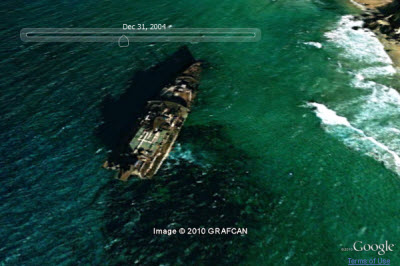

©2010 Google -
Code Home -
Terms of Service -
Privacy Policy -
Site Directory
Google Code offered in:
English -
Español -
日本語 -
한국어 -
Português -
Pусский -
中文(简体) -
中文(繁體)
Plugin time can be set and manipulated in a number of ways:
createTimeStamp() and createTimeSpan() methods create time primitives, which can be applied to placemarks, LookAt or Camera objects, or to the Earth instance.Time affects the plugin in two ways. When attached to KML Features, such as placemarks, it defines the times at which those features are visible; when attached to a Camera or a LookAt, or to the Earth instance, it sets the plugin's virtual clock.
Once time is introduced to the plugin, a time slider appears, allowing the end user to manipulate the plugin time. The slider can also be toggled from the API by calling setVisibility() on the time control object:
ge.getTime().getControl().setVisibility(ge.VISIBILITY_SHOW); ge.getTime().getControl().setVisibility(ge.VISIBILITY_HIDE);

The time slider will range from the earliest to the latest time values loaded into the plugin. If historical imagery is enabled, the time slider will also include all dates for which imagery is available in the current view. To retrieve the current extents of the time slider, call getExtents() on the time control object. Calling getExtents() before the time slider has fully loaded will return incorrect values.
function showExtents() {
var extents = ge.getTime().getControl().getExtents();
var begin = extents.getBegin().get();
var end = extents.getEnd().get();
alert("Begin: " + begin + "\n"
+ "End: " + end);
}
The plugin's imagery database includes a great deal of imagery beyond the latest that is displayed by default. This older imagery is available through the historical imagery feature. To enable/disable it in the plugin:
ge.getTime().setHistoricalImageryEnabled(true); ge.getTime().setHistoricalImageryEnabled(false);
Once historical imagery is enabled, a time slider is displayed, allowing the end user to move through time and view the range of imagery available.

The plugin's clock rate can be adjusted with setRate(), which takes a float specifying the number of seconds that will elapse in the plugin for each 'real life' second.
To return the current rate, call ge.getTime().getRate().
var defaultRate = 1; // 1 second in the plugin for each real second. var speedyRate = 60*60*24*365; // 1 year for each real second. ge.getTime().setRate(speedyRate); ge.getTime().setRate(0); // Pause.
Calling getCalculatedRate() on the time control object returns the rate that the plugin will use if the user clicks the play button on the time slider. This rate will vary based on the range of time currently displayed, as well as user interaction with the slider (such as pressing the + and - rate buttons in the time control).
function showCalcRate() {
var calcRate = ge.getTime().getControl().getCalculatedRate();
var message = 'Calculated rate: ' + calcRate + '\n' + '1 real second equals ';
calcRate = calcRate/(60*60*24*365);
if (calcRate > 1) {
alert(message + calcRate + ' years');
} else if (calcRate*365 > 1) {
alert(message + calcRate*365 + ' days');
} else if (calcRate*365*24 > 1) {
alert(message + calcRate*365*24 + ' hours');
} else if (calcRate*365*24*60 > 1) {
alert(message + calcRate*365*24*60 + ' minutes');
} else {
alert(message + calcRate*365*24*60*60 + ' seconds');
}
}
Time stamps can be created with createTimeStamp(). Time spans are created with createTimeSpan(). Both methods take an optional id.
Time stamps and spans can be applied to a KML Feature (such as a placemark), a LookAt or Camera object, or to the Earth instance.
To create a time stamp:
var timeStamp = ge.createTimeStamp('optional_id');
timeStamp.getWhen().set('1987');
placemark.setTimePrimitive(timeStamp);
lookat.setTimePrimitive(timeStamp);
ge.getTime().setTimePrimitive(timeStamp);
To create a time span:
var timeSpan = ge.createTimeSpan('optional_id');
timeSpan.setBegin('2009-01-01T17:00:00-08:00');
timeSpan.setEnd('2011-05-05');
placemark.setTimePrimitive(timeSpan);
lookat.setTimePrimitive(timeSpan);
ge.getTime().setTimePrimitive(timeSpan);
To get the current plugin time:
function showCurrentPluginTime(){
var time = ge.getTime().getTimePrimitive();
if (time.getType() == 'KmlTimeSpan') {
alert('TimeSpan from ' + time.getBegin().get()
+ ' to ' + time.getEnd().get());
} else {
alert('TimeStamp at ' + time.getWhen().get());
}
}
The plugin can return your computer's system time as a time stamp object:
ge.getTime().getSystemTime();
This provides a way of setting the plugin's virtual clock to the current real time. (Set the virtual clock rate to 1 to continue mirroring real time.) You can also apply the returned time stamp object to a newly created placemark, for example, to mark the exact time at which it was created.